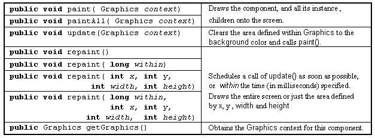

The Component class -
painting actions

A client, or the Component itself, should request an update to its visible appearance by calling repaint(). The subsequent call of update() and paint() will occur on a separate thread.